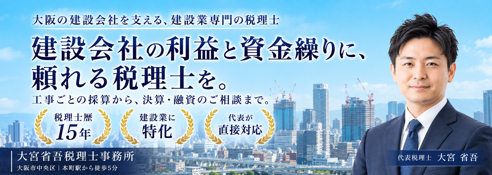

大阪の建設会社を支える、建設業専門の税理士。大宮省吾税理士事務所

大阪の建設会社を支える税理士
建設会社の
利益と資金繰りに、
頼れる税理士を。
工事ごとの採算から、
決算・融資のご相談まで。
税理士歴15年 ／ 建設業専門 ／ 代表が直接対応
社長の、一番身近な相談相手に。
ご相談について →税務も、経営の悩みも。まずはお話をお聞かせください。
こんなお悩み、
抱えていませんか。
受注が増えるほど、数字の管理は複雑になる。
建設会社ならではの悩みを、一緒に整理します。
工事は受注できる。
売上は分かる。
工事ごとの利益が見えない。
経営のことまで、
気軽に相談できる相手が欲しい。
その悩みに、建設業を知る税理士が、直接向き合います。
専門性と、話しやすさ。
どちらも大切にしています。
建設業の数字に向き合う
工事ごとの採算、入金と支払いのタイミング。建設会社の経営課題を踏まえて支援します。
代表が直接対応
初回のご相談から日々の対応まで、大宮省吾本人が担当。相談の背景を継続して共有できます。
15年の実務経験
幅広い中小企業を担当してきた経験を生かし、具体的で分かりやすい言葉でお伝えします。
日々の経理から、
経営の次の一手まで。
戸建て住宅・マンション・ビルを建てる
建設会社の経営を、税務と数字で支えます。
01決算・税務申告
申告のためだけでなく、
会社の今を知る決算に。
日々の経理の疑問から決算・申告まで。会計データを確認しながら、会社の状況を社長と一緒に整理します。
- 帳簿・会計データの確認
- 決算書の作成・法人税等の申告
02工事ごとの採算確認
売上の大きさより、
その工事に残る利益を。
材料費や外注費がかさむ工事こそ、数字の確認が大切です。工事ごとの売上と費用を見える形にして、採算を一緒に確かめます。
- 工事ごとの売上・原価の確認
- 利益を把握するための集計方法の相談
03資金繰りの相談
次の入金までの不安を、
先を見通す準備に。
材料費・外注費の支払いと、工事代金の入金。そのタイミングを踏まえ、受注後のお金の動きを確認します。
- 入金・支払い予定の整理
- 手元資金と返済予定の確認
04融資・銀行提出資料の支援
会社の状況が伝わる、
銀行との相談の準備を。
資金が必要な理由や会社の状況を、数字で説明できるように。融資のご相談から銀行提出資料の確認・準備まで支援します。
- 融資に向けた相談・状況の整理
- 銀行提出資料の確認・準備支援
建設業許可などの手続きも、ご相談ください。
税務以外の手続きは、必要に応じて提携する行政書士などの専門家へおつなぎします。
月額も、年間も。
費用を見える形に。
法人顧問の基本料金と追加業務を明示しています。
月額顧問料（税込）22,000円〜税抜20,000円〜／決算・申告料は別途
年間費用の一例
年商8,000万円・自社で記帳・四半期ごとのオンライン面談
顧問料12か月＋決算申告＋消費税申告（一般課税）
年末調整等の追加業務は含みません。


代表税理士 大宮 省吾
社長の隣で、
会社のこれからを考える。
東京でさまざまな業種の中小企業を担当した後、地元・大阪で独立。幅広い実務経験を土台に、建設会社の利益と資金繰りに向き合っています。
数字を一方的に説明するのではなく、社長と一緒に状況を確認する。それが、私の大切にしている姿勢です。
代表の経歴・事務所について →CONSULTATION FLOW
ご相談から、ご契約まで。
まずは、現在の状況とお困りごとをお聞かせください。
- STEP01
ご相談のご連絡
事業の内容や、お困りのこと、ご相談したいテーマをお知らせください。
- STEP02
大宮本人との面談
会社の状況とご希望を伺い、必要な支援を一緒に整理します。
- STEP03
支援内容・お見積もり
ご相談内容に応じた支援範囲と費用を、分かりやすくご案内します。
- STEP04
ご確認・ご契約
支援内容とお見積もりをご確認いただき、ご納得のうえで契約へ進みます。
ご相談・面談は、代表税理士の大宮省吾が直接対応します。
ご相談の前に
Q.今の税理士から変更できますか？
現在のご契約状況や変更を考えている理由を伺い、引き継ぎの進め方をご相談します。
Q.資金繰りや融資の相談もできますか？
はい。税務申告に加え、入出金のタイミングを踏まえた資金繰りの相談や銀行提出資料の確認・準備も支援します。
Q.相談は誰が担当しますか？
代表税理士の大宮省吾が、直接お話を伺います。
会社の数字も、これからのことも。
一緒に考えましょう。
工事ごとの利益、資金繰り、顧問契約のこと。
まだ整理できていないお悩みも、お聞かせください。
代表税理士の大宮省吾が直接お話を伺います。